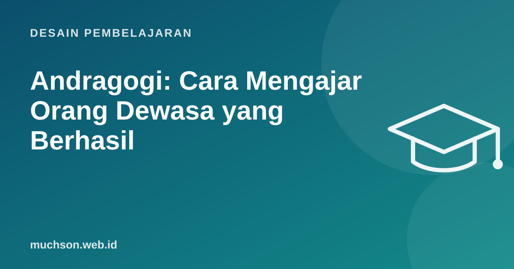

Beranda › Artikel › Desain Pembelajaran
Desain PembelajaranAndragogi: Cara Mengajar Orang Dewasa yang Berhasil
Peserta pelatihan korporat datang dengan pengalaman bertahun-tahun, tenggat pekerjaan yang menunggu, dan pertanyaan di kepala: "apa gunanya ini untuk saya?" Mengajar mereka seperti mengajar siswa sekolah hampir pasti gagal. Malcolm Knowles mempopulerkan istilah andragogi untuk menggambarkan cara orang dewasa belajar.

Enam asumsi andragogi
Catatan
Andragogi lebih tepat dipandang sebagai seperangkat asumsi yang berguna, bukan hukum yang membedakan anak dan dewasa secara mutlak. Banyak prinsipnya juga membantu siswa remaja.
Rancangan sesi 3 jam untuk orang dewasa
| Waktu | Kegiatan | Prinsip |
|---|---|---|
| 0-15 | Masalah nyata: data keluhan bulan lalu dari tim mereka sendiri | Perlu tahu alasan |
| 15-35 | Peserta berbagi kasus tersulit dalam kelompok kecil | Pengalaman |
| 35-60 | Kerangka singkat + contoh | Berorientasi masalah |
| 60-120 | Latihan: role play kasus mereka sendiri dengan umpan balik | Pengalaman, masalah nyata |
| 120-150 | Peserta memilih satu alat untuk dicoba dan merencanakan penerapan | Mandiri |
| 150-180 | Komitmen tindakan dan cara tindak lanjut | Siap belajar, motivasi |
Menghadapi peserta yang skeptis
- Akui pengalaman mereka: "Anda mungkin sudah menangani ratusan keluhan. Bagian mana yang paling sering membuat frustrasi?"
- Tunjukkan bukti dari konteks mereka, bukan dari perusahaan lain di negara lain.
- Undang mereka menjadi kontributor: minta mereka berbagi praktik terbaik.
- Jangan berdebat soal teori; uji bersama dalam latihan singkat.
Kesalahan umum trainer
Tanya jawab
Apa bedanya pedagogi dan andragogi?
Pedagogi secara harfiah tentang mengajar anak dengan pengajar sebagai pusat; andragogi menekankan kemandirian, pengalaman, dan relevansi. Dalam praktik, keduanya berada dalam satu spektrum.
Bagaimana bila peserta sangat beragam pengalamannya?
Manfaatkan keragaman: pasangkan yang berpengalaman dengan yang baru, dan sediakan tantangan tambahan bagi yang sudah mahir.
Apakah e-learning cocok untuk orang dewasa?
Cocok bila singkat, relevan dengan tugas kerja, dan memberi kendali kepada peserta untuk melewati bagian yang sudah dikuasai.
Sumber dan bacaan lanjut
- Merriam (2001): Andragogy and Self-Directed Learning, Pillars of Adult Learning Theory
- Evaluasi pelatihan model Kirkpatrick (artikel terkait)
- Merancang e-learning yang tidak membosankan (artikel terkait)